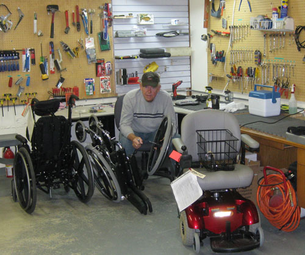

Mobility Ministry
DO YOU NEED EQUIPMENT?
CAN YOU DONATE EQUIPMENT?
A Valuable Community Resource
Providing mobility items such as wheelchairs, walkers, commodes, bath benches etc. is a valuable resource within our community.
Mobility helps to alleviate isolation and allows people to participate and move more freely within their community. Gaining better access to basic needs, resources, jobs, education and other opportunities promotes awareness and greater independence.
We are grateful for the individuals and organizations which are able to support our ministry with their in-kind and financial gifts.
Expect Compassion
At Bridge, we know that whether donating after the loss of a loved one or receiving items, people served are almost always facing grief and or daily challenges in self-care or caring for a person with a disability.
Volunteers
Our Volunteers clean and inspect the equipment prior to distribution. This ensures that the equipment is fully functional and ready to serve the needs of those less fortunate in our disabled community. Â
On June 30th, 2011 our Mobility Manager Bob Meyer went to the Lord. Please read the blog article in memory of him and his service to people living with disabilities at Bridge. In honor of Bob, the Center has been renamed the "Meyer Mobility Center."